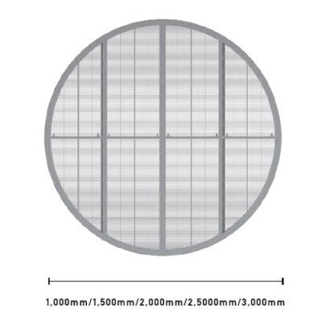
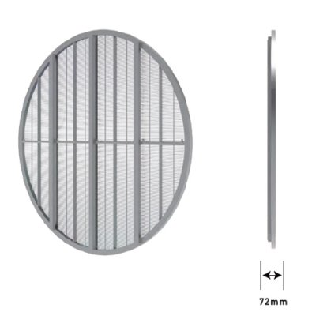

ERT20-3978在庫あり
直径2.5m丸型シースルーLEDビジョン｜P3.9mm×P7.81mmピッチ｜輝度2500cd/㎡
¥2,750,000(税込)
価格・在庫状況は変動する場合があります。最新情報はお問い合わせください。
円形のユニークな形状のデザインサイネージは人々の視線を自然に集められコンテンツを見てもらう導線の1つです。
□ 大きさは5種類から選択可能
直径1m、1.5m、2m、2.5ｍ、3mの中から設置場所に合わせた最適なものを選択可能です。
□ 空間に調和するシースルー
シースルーLEDは窓面に置く場合、外からの光を遮る事なく映像を配信する事が出来ます。
□ 設置方法
天吊り、スタンドの二種類となります。
※ 受注生産品となりますので、お届けまで約30日〜60日ほどのお時間を頂きます。
※ 配送費は別途必要となります。（お届け先により変動致します）
※ 映像コントローラーは付属しております。（USB再生）
※ 取付費用は別途となります。